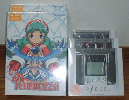

アンオフィシャルピースコンテスト
|
||||||||||
| 発売以来、企業レベルよりもユーザレベルで盛り上がってるP/ECE。それならユーザレベルでコンテストやってみてもいいんじゃないの？
ということで「P/ECEのコンテスト」と「P/ECE魂」とをかけあわせて、その名もアンオフィシャルピースコンテスト『Ｐ魂』（ぴーこん）です。
主催：てとら★ぽっと・takadeko on the web |
||||||||||
| （2021/09/15）サイト復旧しました。アプリのアーカイブが一部しか残っていないので、もしお持ちの方いたらご連絡いただけますと幸いです。また、ずいぶん過去のことなので、各種リンク先がかなりNot Foundですが、移転などで同じ名義で残っているものについては、極力リンクを更新させていただいています。 | ||||||||||
『Ｐ魂2004』開催！（2004/08/15）『Ｐ魂2004』ページへ |
||||||||||
いよいよ審査結果発表！（2003/08/04）大変お待たせしました！ 審査結果発表ページへ全ての賞品を発送しました。（2003/12/10）賞品の発送が遅れましたことをお詫び申し上げます。 |
||||||||||
賞品空木驪竜さんから賞品をいただきました。掲載が遅れて申し訳ありません。（2003/07/21）
任天堂 MINI CLASSICS GAMES『オクトパス』（英語版） ゲームウォッチの『オクトパス』をキーチェーンゲームにしたものです。 ミスターＰ氏（匿名希望）から賞品をいただきました。（2003/06/20） ユージン おでかけマルチ ボトルキャップフィギュア 1ケース（24体） これまたP/ECE関連賞品です。どうもありがとうございます。 P/ECE発売元であるアクアプラスさんからの賞品を公開します。（2003/06/01）  |
||||||||||
審査員 審査員を1名追加しました。（2003/06/02）
|
||||||||||
当ページへのリンクおよび雑誌掲載について 当ページはリンクフリーです。というかどんどんリンク張って宣伝して下さい（´ー｀
雑誌掲載につきましては、事前にzurachu@gmail.comまで連絡いただけるようお願いします。 |
||||||||||
応募規定今回の募集は、ソフトウェアのみ（ゲームかツール問わず、P/ECE側プログラムかWindows側プログラムかも問わず）とします。 なお、特に審査の部門分けはありません。 ×公序良俗に反する、年齢制限が必要である（性的描写など）作品は応募できません。 ×過去に他のコンテストに応募した、雑誌（P/ECE
HAND BOOK含む）に掲載された、コミケなどWeb以外の場で頒布した作品は応募できません。 ○有料頒布する予定のソフトやシェアウェアも応募することができます。その際、公開してもかまわない無料配布版（体験版）をなるべく添付するようにして下さい。（発表時にダウンロードできるようにするため） ○二次創作物については、一次創作元のガイドラインに従っている場合に限り応募することができます。その場合、一次創作元を明記して下さい。なお、応募に関して一次創作元との間で問題が発生した場合、本コンテストは責任を負えませんのでご了承下さい。 ○他の人が作った「○○作成ツール」で作成したソフトは、ツール制作者に許可を得た場合に限り応募することができます。その場合、ツール名およびツール作者名を明記して下さい。 |
||||||||||
|
てとら★ぽっと / takadeko on the web |